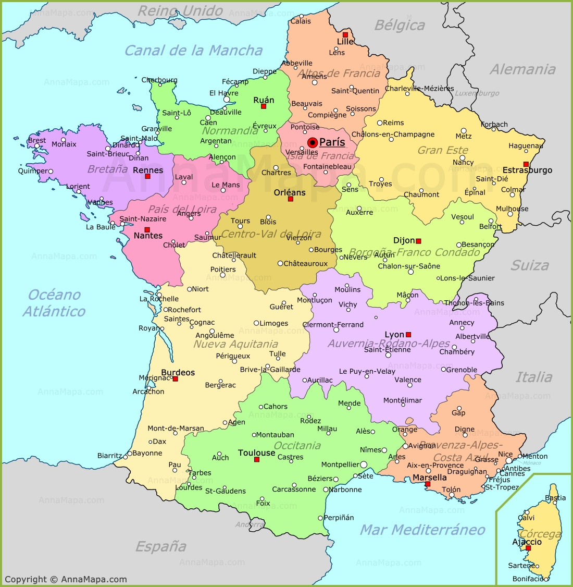

Francia
| Información | |||||||||||||||||||||||||||
|---|---|---|---|---|---|---|---|---|---|---|---|---|---|---|---|---|---|---|---|---|---|---|---|---|---|---|---|
|
Francia, en Europa Occidental, abarca ciudades medievales, villas alpinas y playas mediterráneas. París, su capital, es famosa por sus firmas de alta costura, los museos de arte clásico, como el Louvre,y monumentos como la Torre Eiffel. El país también es reconocido por sus vinos y su gastronomía sofisticada. Los dibujos de la antigua cueva de Lascaux, el teatro romano de Lyon y el imponente Palacio de Versalles dan fe de su rica historia. |  | ||||||||||||||||||||||||||
| Lugares y ciudades para visitar | |||||||||||||||||||||||||||
Torre EiffelLa Torre Eiffel no es solo un símbolo de París, sino un símbolo de toda Francia. Erigida por Gustave Eiffel para conmemorar el centenario de la Revolución Francesa en 1889,la torre de 320 metros (1.050 pies).Ha este memorable momento se puede llegar a ver desde muchos lados de la capital pero desde siempre os recomendaremos coger el servicio de tour guiado. |

| ||||||||||||||||||||||||||
Disneyland® ParísDesde montar en Space Mountain hasta volar con Peter Pan y tomarse una selfie con Mickey Mouse, pocos parques temáticos ofrecen tanta magia de cuento de hadas como Disneyland®. Con alrededor de 14 millones de visitantes anuales, Disneyland® Paris es el parque temático más grande y concurrido de Europa | |||||||||||||||||||||||||||
NizaHermosas playas, un clima espectacular del Mediterráneo, tiendas vibrantes y atractivos colores, hacen de Niza uno de los lugares más populares para visitar en Francia. Situado en la Costa Azul en el sudeste de Francia,Niza es una ciudad balnearia en expansión que ofrece algo para todos. |

| ||||||||||||||||||||||||||
EstrasburgoSituado justo en la frontera de Francia y Alemania, Estrasburgo es la ciudad capital de la región de Alsacia. La ciudad sirve como sede de numerosas otras instituciones importantes, como el Tribunal Europeo de Derechos Humanos,el Consejo de Europa ademas del Parlamento Europeo. Centro histórico de la ciudad, la Gran Isla,es lo que hace Estrasburgo uno de los mejores lugares para visitar en Francia. | |||||||||||||||||||||||||||
| Alojamiento | |||||||||||||||||||||||||||
| |||||||||||||||||||||||||||